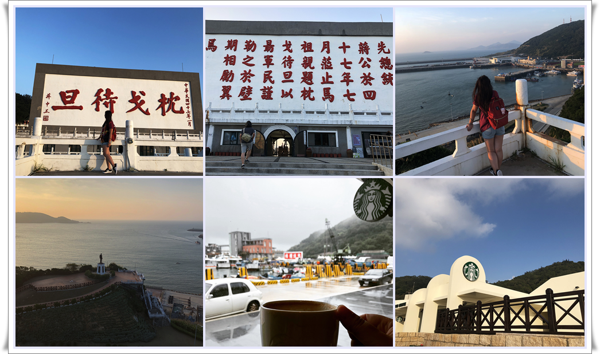
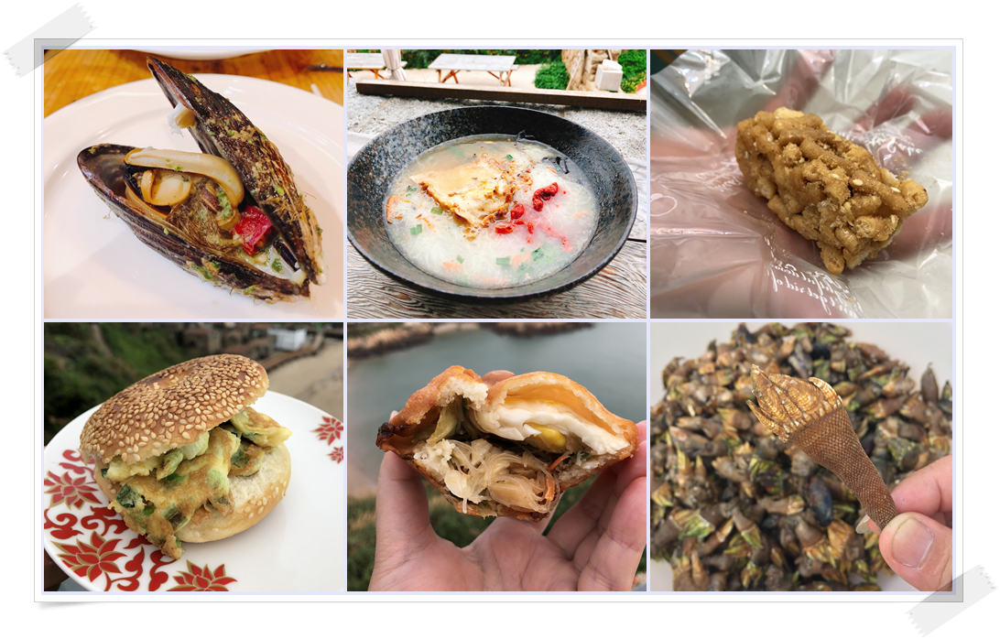

卡蹓馬祖
馬祖列島，在福州外海成串排列，早期有「閩東之珠」的美譽，原本的對外貿易繁華不再，兩岸政治的因素，成為緊張的對峙，因而失去了珍珠應有的光彩。
要卡蹓 馬祖最好的交通工具就是機車了，騎上機車有路就衝，用「衝」著個字眼，是因為整個島的馬路，都是斜坡，「地無三里平，人無三兩銀」這句形容重慶的話，用來形容這裡倒也很貼切。

牛角
牛角聚落沿著港灣而築，是連江縣政府及文史工作者目前努力保留的文化遺跡，這也是南竿島最具特色的景點，對於愛好攝影的人士來說，這裡是朝聖之地，這裡的質樸與大自然的色彩，足以讓每一件攝影作品，表現出最豐富的調性與構圖。
福澳港
台馬輪停靠港口，已經現代化，景色並不突出。有一間廟「華光大帝廟」，是馬祖民間信仰之一。
還有位在福澳與清水之間的福清嶺山腰上的「枕戈待旦紀念公園」（福山照壁），如果你是搭臺馬之星或臺馬輪前往馬祖南竿的話，當船駛進福澳港後，你就會看到代表馬祖戰地精神的四大紅字「枕戈待旦」。
這四字是蔣介石於民國47年7月蒞臨馬祖巡視防務時，為嘉勉馬祖軍民不忘復國之志而親筆所題，再經原有銘刻字跡原樣放大，闢建而成的。而在公園內的展望台可以眺望福澳港全景，在這裡看夕陽也是超美的。
Back To Top
馬祖美食
你知道來馬祖玩，不可錯過的美食有哪些嗎？
淡菜、芙蓉貝、海鋼盔、海瓜子、紫菜、佛手、繼光餅、大餅、魚麵、老酒黃魚、蠣餅、鼎邊糊、蛋餅、餛飩馬祖酥、芙蓉酥、蘿蔔酥、馬祖酒這些都是你來馬祖的必吃美食，錯過了，就要再坐飛機來，才能品嚐的到。
四面環海的馬祖，海鮮美味當然是不可少的。在這裡，可以嚐到臺灣本島幾乎見不到的海鮮，因為當地生活簡樸，在料理上以家常口味為主，並沒有複雜的料理方式或是加添太多人工香料，也因此可以吃的到海鮮的原味，以及傳統手工的各式特產。
芙蓉貝、海鋼盔、海瓜子、紫菜、佛手（筆架）、小鮑魚、蠑螺、粗螺、竹蟶等天然海鮮，當地人可以在退潮的海邊撿拾，經過簡單的處理，就成為下酒小菜或是可口的開胃菜。

Back To Top